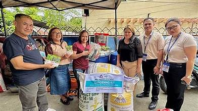
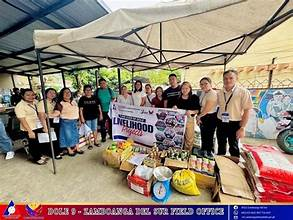
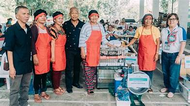

Overview
The economy of Zamboanga del Sur is largely driven by agriculture, fishing, and small to medium-scale trade. The province is predominantly rural, with a majority of the population engaged in farming and fishing for their livelihoods.
Agricultural Economy
Agriculture is the backbone of the provincial economy. The major crops include coconut for copra, rice, corn, banana, and various vegetables. Copra production is especially significant, with the province being a notable coconut-producing area in Mindanao.
Fishing and Aquaculture
Coastal communities rely heavily on fishing in the waters of Illana Bay and the Moro Gulf. Both commercial and subsistence fishing are practiced. Aquaculture, particularly seaweed farming and fish pond culture, has grown as an important livelihood.
Trade and Commerce
Pagadian City is the commercial heart of the province, hosting markets, malls, banks, and trading posts. The city serves as a distribution hub for agricultural products and consumer goods. Weekly markets in municipalities facilitate local trade and exchange.
Government and Services
Government employment, education, health services, and public utilities represent a significant portion of the formal workforce. The expansion of service-sector jobs in Pagadian City has provided employment opportunities for educated residents.
Economic Challenges
The province faces challenges including limited infrastructure in interior areas, vulnerability to natural disasters, and the need for economic diversification. Government programs target poverty reduction, agricultural modernization, and small enterprise development.
Key Facts
- Main Industries: Agriculture, fishing, trade
- Major Crop: Coconut (copra)
- Commercial Center: Pagadian City
- Employment: Mostly agriculture-based
- Income Class: 4th to 5th class municipalities